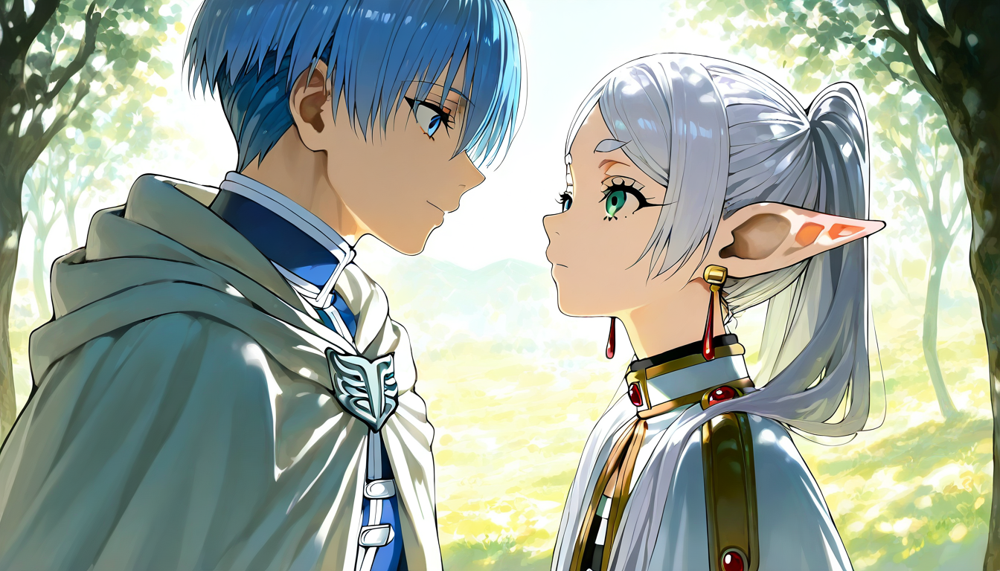

| 總分 | 完成後打勾 | 配分 | 分項描述 |
|---|---|---|---|
| 4 | Simple baseline - 完成ComfyUI建置 | ||
| 4 | Medium baseline - 完成芙莉蓮文生圖 | ||
| 2 | Strong baseline - 替換模型完成辛梅爾文生圖 | ||
| -10 | 沒有寫100字心得 |
1344 * 768
LoRA Strength : 1.0
Positive：masterpiece, best quality, high score, great score, absurdres, illustration, pointy ears, 1girl, solo, frieren, sousou no frieren, long hair, 1boy, flower, head wreath, smile, petals, earrings, jewelry, shirt, elf, blue flower, outdoors, green eyes, upper body, long sleeves, striped shirt, striped, sky, solo focus, closed mouth, white hair, falling petals, glowing, <lora:mix-a4-v2:1>,
Negative：lowres, bad anatomy, bad hands, text, error, missing finger, extra digits, fewer digits, cropped, worst quality, low quality, low score, bad score, average score, signature, watermark, username, blurry,
1024 * 1280
LoRA1 Strength : 0.5
LoRA2 Strength : 0.45
r17329_illu, xxx667_illu, very awa, anime screencap, masterpiece,best quality,1boy, 1girl, frieren, himmel \(sousou no frieren\), outdoors, upper body, eye contact, light blue hair, cape, capelet, earrings, dappled sunlight, day, hand on another's head, kesyeru, sousou no frieren, <lora:R754496:0.45>, <lora:ma1ma1helmes:0.5>,
lowres,bad anatomy,bad hands,text,error,missing fingers,extra digit,fewer digits,cropped,worst quality,low quality,normal quality,jpeg artifacts,signature,watermark,username,blurry,artist name,
